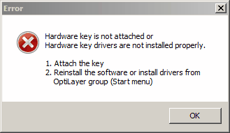
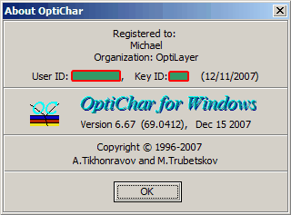

Installation
Before starting the installation, please ensure that your system is
running Windows with all the latest updates installed. Keeping your
system updated improves security and stability, and helps to eliminate
potential problems with driver installation that may occur in systems
that have not been updated for a long time.
The hardware key supplied with this software, or one that was previously
supplied with other programs from the OptiLayer family, must be
connected to the parallel printer port or USB port of your computer to
use the OptiLayer software. This key does not interfere with the
printer’s operation.
If the hardware key is not connected, you will receive the following
message when you attempt to run the OptiChar program:

Note: OptiChar and other programs of the OptiLayer family have a new
type of security algorithm incorporated in them. This will provide
additional user convenience in that it will allow a particular key to be
upgraded for specific versions of the software. It will also allow a
particular key to be enabled for different programs.
Important note for USB key users: for the first installation it is
recommended to install OptiLayer software first and to attach the key
only after finishing the installation. It will allow your computer to
detect the key automatically.
To install the OptiLayer thin film software, follow these steps:
1. Insert the CD or Download the Installation File:
- If you have a CD, insert it into your CD-ROM drive.
2. Locate the Installation File:
- If using a CD, open “This PC” or “My Computer” and navigate to
the CD-ROM drive.
- If downloaded, go to the folder where the installation file is
saved (usually your Downloads folder).
3. Run the Installation File:
- Double-click on the installation file (this may be named
something like OptiLayerSetup.exe or similar).
4. Follow the Installation Wizard:
- A setup wizard will appear guiding you through the installation
process. Follow the on-screen instructions carefully.
- Read and accept the license agreement when prompted.
5. Choose the Installation Location:
- You may be asked to select the installation directory. You can
accept the default location or choose a different folder.
6. Complete Installation:
- After configurations and selections, the installer will copy the
necessary files to your computer. This may take a few minutes.
- Once the installation is complete, you may be given the option to
launch the software immediately.
7. Connect Hardware Key:
- Make sure to connect the hardware key to the parallel printer
port or USB port of your computer (as mentioned in your previous
message) before running OptiLayer software for the first time.
8. Launch the Software:
- After installation, you can launch the software from the Start
menu, desktop shortcut, or application folder.
9. Verify Functionality:
- Ensure that the software recognizes the hardware key and operates
properly. If any issues arise, refer to troubleshooting steps or
contact support.
By following these steps, you should be able to successfully install
and begin using the OptiLayer thin film software.
Installation Procedure for OptiLayer Software
In case you are downloading the software from the Internet, the
installation will begin by launching the corresponding EXE file (for
example, OLv7.68.exe or OLv8.17.exe). Follow the step-by-step
instructions that will appear on the screen.
Setup Types Available:
- Typical:
- The program will be installed with the most common options, which
includes:
- OptiChar application files
- Catalog files
- Examples
- Compact:
- The program will be installed with the minimum required options,
specifically:
- OptiChar application files only
- Custom:
- This option allows the user to choose which specific components
they want to install. This is ideal for those who require a tailored
installation experience.
### Follow-Up Steps:
After selecting your desired installation type, proceed with the
following:
1. Confirm Your Selection: Make sure to review the chosen setup.
2. Continue Installation: Click through the on-screen prompts to
complete the process.
3. Finalize Setup: Wait for the installation to finish, and follow any
additional instructions that may arise.
Once installed, you can launch the OptiLayer software and start
utilizing its features according to your needs.
Notes:
Under normal circumstances the automatic setup procedure described above
provides the correct operation of the hardware key. In rare cases
(non-standard hardware/software configurations, special requirements,
etc.) it may be necessary to configure the drivers. Additional
information can be obtained in the Internet:
www.safenet-inc.com (SafeNet hardware
key) or http://www.guardant.com/download/drivers (Guardant hardware
key)
After successful installation hardware key driver installers are located
in the OptiLayer group of the Windows Start->All Programs menu.
We recommend upgrading any version of Windows to the latest available
level. It will improve overall performance of your system and fix many
potential problems. You can visit Microsoft Web site
www.microsoft.com for further
information. Using Autoupdate Windows feature is highly recommended.
Important:
You can always check current version of OptiChar and important license
information (User ID, Key ID) in the About box, for example:

(Licensing information is hidden at this illustration).